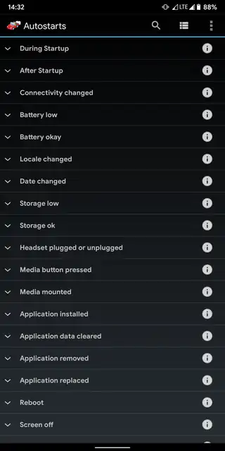
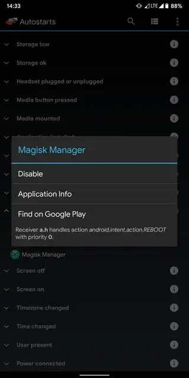

Autostarts - Block apps from starting automaticall
أدوات النظام
Shows you what apps run when events occur and what other events trigger in the background. Root users can disable unwanted autostarts and speed up their phone boot. Requires Root: No. However, to make changes you will need root.
✓ ترخيص مفتوح (GPL-3.0-only) · آخر تحديث: 2020-10-24
2.0.0الإصدار
528 KBالحجم
GPL-3.0-onlyالرخصة
Open in Kanzتحميل APK (528 KB)
Download APK
SHA-256: 2a65c743a52b1aa08128d8c06e1df18bc9621bb85f74175b1bda2f6980b09d62


امسح الكود لفتح صفحة التطبيق
Scan to open this app page
لو كنز مش متثبت عندك: نزّل متجر كنز.
Not installed? Get the Kanz store.